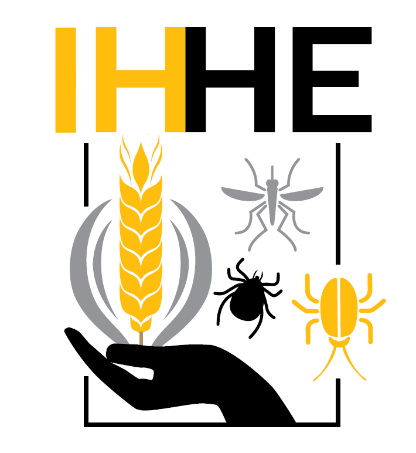
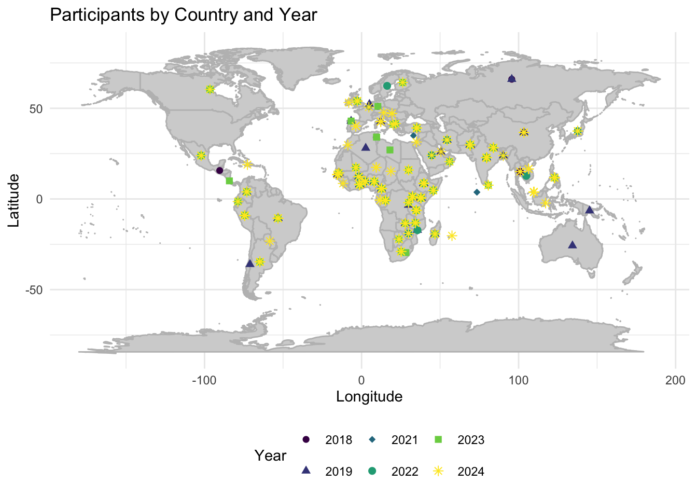

A worldmap for applicants to the BVBD course at UofI
Maps!
Portfolio
DataViz
Final
Author
Lucas
Published
April 23, 2024
Preamble
Since 2021 I have been working as a graduate student as part of the organizing advisory committee for the Institute for Health in the Human Ecosystem (IHHE).

Institute for Health in the Human Ecosystem (IHHE) logo.
Here’s a description of the Biology of Vector-borne Diseases course that’s hosted at the University of Idaho every year, taken from the IHHE webpage:
“The Institute for Health in the Human Ecosystem hosts the annual Biology of Vector-borne Diseases six-day course. This course provides accessible, condensed training and”knowledge networking” for advanced graduate students, postdoctoral fellows, faculty and professionals to ensure competency in basic biology, current trends and developments, and practical knowledge for U.S. and global vector-borne diseases of plants, animals and humans. We seek to train the next generation of scientists and help working professionals to more effectively address current and emerging threats with holistic approaches and a strong network of collaborators and mentors.”
So, as part of the organizing advisory committee, we have been considering how to examine the evolution and popularity of the course applicants over the last six years. A suitable visualization would be a world map displaying the home countries of the applicants, year by year.
Data
Write a summary of the data sources you will use. Include a Data Dictionary table that fully describes each individual data file used. You may use your own research data or publicly available data from any source you like (with attribution). There aren’t any minimum or maximum data set size requirements, other than you need something big enough to be interesting and not so big that we don’t have a supercomputer capable of creating your visualization.
NEW REQUIREMENT: Your assignment must feature one of the two new data types we have considered since the midterm: NETWORK DATA or SPATIAL DATA.
Code
library(rnaturalearth)
Warning: package 'rnaturalearth' was built under R version 4.2.3
Code
library(ggplot2)
Warning: package 'ggplot2' was built under R version 4.2.3
Code
library(dplyr)
Warning: package 'dplyr' was built under R version 4.2.3
Attaching package: 'dplyr'
The following objects are masked from 'package:stats':
filter, lag
The following objects are masked from 'package:base':
intersect, setdiff, setequal, union
Code
library(sf)
Warning: package 'sf' was built under R version 4.2.3
Linking to GEOS 3.11.0, GDAL 3.5.3, PROJ 9.1.0; sf_use_s2() is TRUE
Code
library(readxl) participants <- readxl::read_excel("BVBD Applicants Merged.xlsx")world <-ne_countries(scale ="medium", returnclass ="sf")world$centroid_lon <-st_coordinates(st_centroid(world$geometry))[, 1]world$centroid_lat <-st_coordinates(st_centroid(world$geometry))[, 2]participants_with_centroids <- participants %>%left_join(world %>%select(name, centroid_lon, centroid_lat), by =c("Country"="name"))ggplot(data = participants_with_centroids) +borders("world", colour ="gray", fill ="lightgray") +# Draw the base mapgeom_point(aes(x = centroid_lon, y = centroid_lat, color =as.factor(Year), shape =as.factor(Year)), size =2) +# Plot points with varying colors and shapes per Yearscale_color_viridis_d(name ="Year") +# Use a nice color scale for colorsscale_shape_manual(name ="Year", values =c(16, 17, 18, 19, 15, 8)) +# Manually set shapes, adjust values as needed based on the number of yearstheme_minimal() +labs(title ="Participants by Country and Year", x ="Longitude", y ="Latitude", color ="Year", shape ="Year") +theme(legend.position ="bottom")
Warning: Removed 261 rows containing missing values or values outside the scale range
(`geom_point()`).

Source Code
---title: "Final"subtitle: "A worldmap for applicants to the BVBD course at UofI "format: html: toc: false echo: trueauthor: "Lucas"date: "2024-04-23"categories: [Portfolio, DataViz, Final]image: "ihhe.png"description: "Maps!"code-fold: truecode-tools: true---# **Preamble**Since 2021 I have been working as a graduate student as part of the organizing advisory committee for the **Institute for Health in the Human Ecosystem (IHHE).**{fig-align="center" width="300"}Here's a description of the Biology of Vector-borne Diseases course that's hosted at the University of Idaho every year, taken from the IHHE webpage:"The Institute for Health in the Human Ecosystem hosts the annual Biology of Vector-borne Diseases six-day course. This course provides accessible, condensed training and "knowledge networking" for advanced graduate students, postdoctoral fellows, faculty and professionals to ensure competency in basic biology, current trends and developments, and practical knowledge for U.S. and global vector-borne diseases of plants, animals and humans. We seek to train the next generation of scientists and help working professionals to more effectively address current and emerging threats with holistic approaches and a strong network of collaborators and mentors."Here's a link to the IHHE website:<https://www.uidaho.edu/research/entities/ihhe/education/vector-borne-diseases>So, as part of the organizing advisory committee, we have been considering how to examine the evolution and popularity of the course applicants over the last six years. **A suitable visualization would be a world map displaying the home countries of the applicants, year by year**.# **Data**Write a summary of the data sources you will use. Include a `Data Dictionary` table that fully describes each individual data file used. You may use your own research data or publicly available data from any source you like (with attribution). There aren’t any minimum or maximum data set size requirements, other than you need something big enough to be interesting and not so big that we don’t have a supercomputer capable of creating your visualization.**NEW REQUIREMENT: Your assignment must feature one of the two new data types we have considered since the midterm: NETWORK DATA or SPATIAL DATA.**```{r}library(rnaturalearth)library(ggplot2)library(dplyr)library(sf)library(readxl) participants <- readxl::read_excel("BVBD Applicants Merged.xlsx")world <-ne_countries(scale ="medium", returnclass ="sf")world$centroid_lon <-st_coordinates(st_centroid(world$geometry))[, 1]world$centroid_lat <-st_coordinates(st_centroid(world$geometry))[, 2]participants_with_centroids <- participants %>%left_join(world %>%select(name, centroid_lon, centroid_lat), by =c("Country"="name"))ggplot(data = participants_with_centroids) +borders("world", colour ="gray", fill ="lightgray") +# Draw the base mapgeom_point(aes(x = centroid_lon, y = centroid_lat, color =as.factor(Year), shape =as.factor(Year)), size =2) +# Plot points with varying colors and shapes per Yearscale_color_viridis_d(name ="Year") +# Use a nice color scale for colorsscale_shape_manual(name ="Year", values =c(16, 17, 18, 19, 15, 8)) +# Manually set shapes, adjust values as needed based on the number of yearstheme_minimal() +labs(title ="Participants by Country and Year", x ="Longitude", y ="Latitude", color ="Year", shape ="Year") +theme(legend.position ="bottom")```